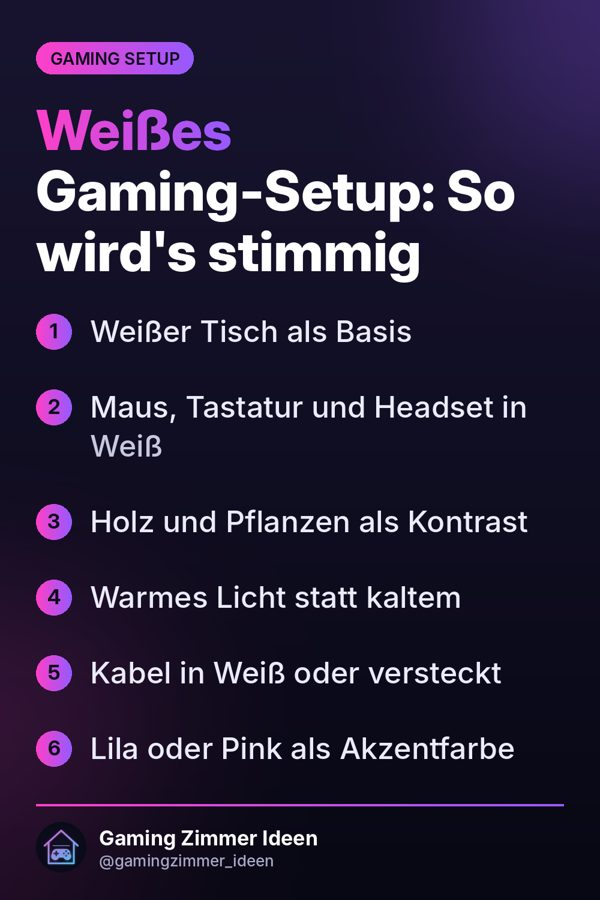

Weißes Gaming-Setup: 6 Tipps für einen hellen, stimmigen Look

So wirkt dein Setup hell, modern und richtig stimmig. Jetzt merken!
Auf einen Blick
- Weißer Tisch als Basis
- Maus, Tastatur und Headset in Weiß
- Holz und Pflanzen als Kontrast
- Warmes Licht statt kaltem
- Kabel in Weiß oder versteckt
- Lila oder Pink als Akzentfarbe